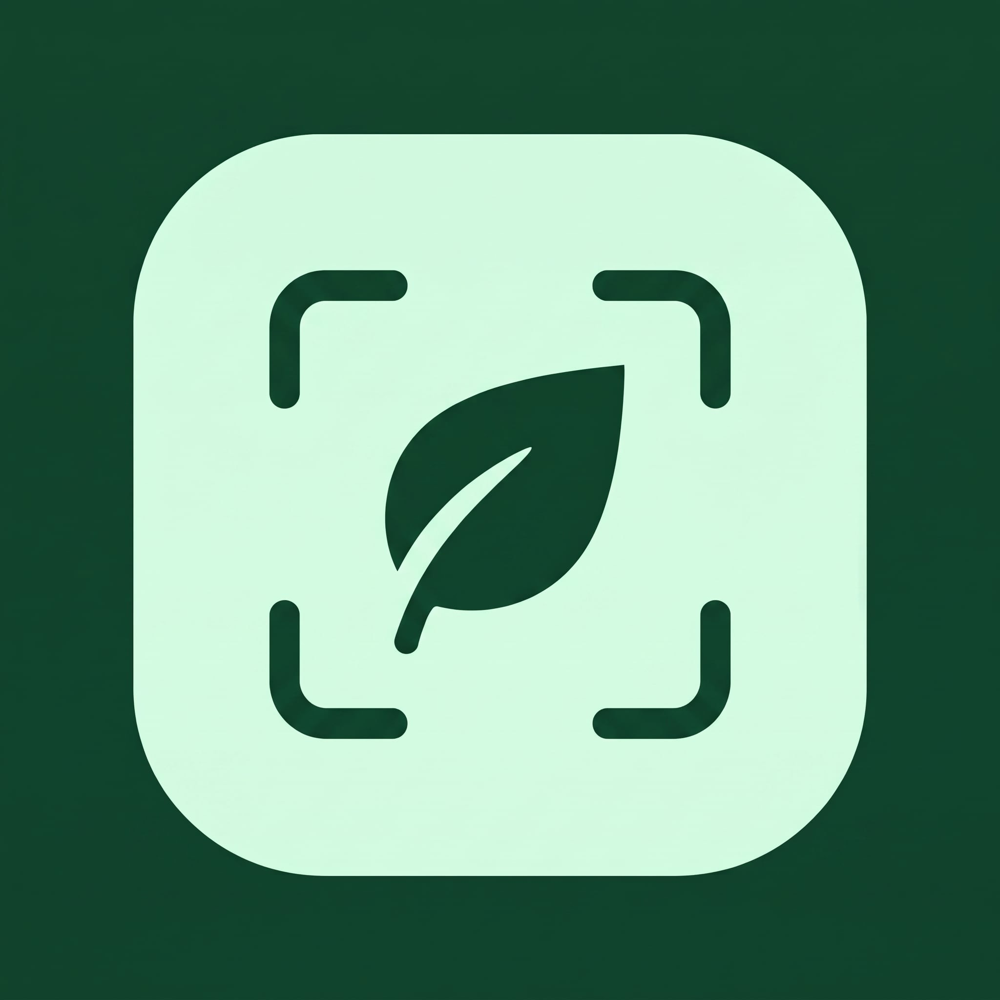

Plant / Crop ScanCamera preview · Gemini-powered plant analysisCamera Paused
Camera preview only
AI Health Analysis
Camera PausedLatest successful analysis: Not available
Start the camera or analyze a photo to see Gemini findings.
Plant HealthNot analyzed›
Leaf ConditionNot analyzed›
Growth StageNot analyzed›
Disease RiskNot analyzed›
DiscolorationNot analyzed›
⟳ Recent Changes
No scan comparisons are available yet.
▣ Farm Log
Submitted scans will appear in your scan history.
△ Alerts
No AI-generated crop alerts are available.
About model results
Predictions are experimental and limited to the model's trained classes. Confirm crop concerns with a local agricultural expert.
Quick Actions
GEMINI AI RESULT
Result unavailable
Qualitative confidence:
Latest successful analysis: Not available
Plant / crop
Plant health
Leaf condition
Growth stage
Disease risk
Discoloration
Possible issue
Severity
Manual verification is recommended. AI analysis is not a definitive diagnosis.